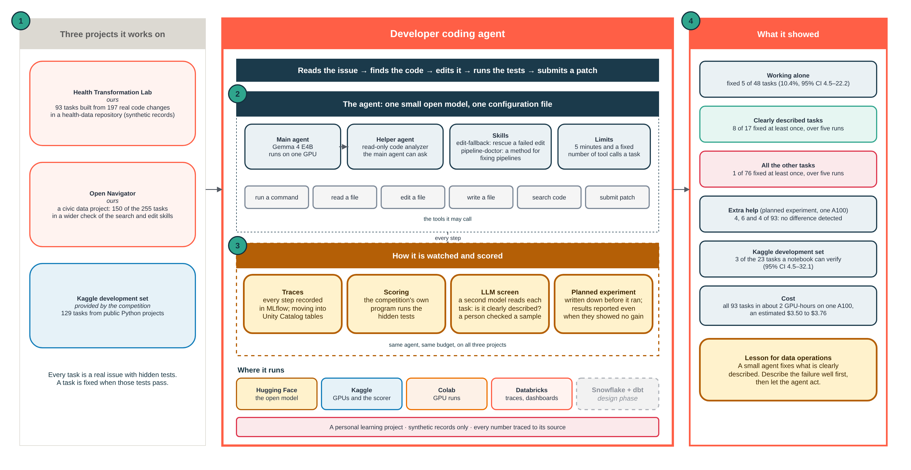

Can an open model on one GPU redo a cloud agent's work?
The developer coding agent and the three projects it runs on. Context shows the whole picture, with zoom. Side by side shows it next to what each part means: choose a line to zoom into its part. From gemma-developer-agent; a personal learning project, not affiliated with any employer or organisation.
Open the image
Drag to move around when zoomed in.
![The developer coding agent and the three projects it runs on. Left: Health Transformation Lab (93 tasks from 197 real code changes), Open Navigator (150 of the 255 tasks in a wider check of the search and edit skills) and the competition's development set (129 tasks). Centre: the agent, Gemma 4 E4B with a read-only helper agent, two skills, a five-minute budget and its tools; below it, how it is watched and scored: traces, the competition's evaluator, an AI screen of the tasks and a pre-registered experiment; it runs on Hugging Face, Kaggle, Colab and Databricks, with Snowflake and dbt in the design phase. Bottom left: finding the cause from traces, where a function names the stage at which each run stopped. Right: what the runs showed.](../img/coding_agent_architecture.png)
Choose a line, or click a part of the picture, to zoom into it.

The picture in five lines
- Three projects (left). Two of ours, health-transformation-lab-nlp and open-navigator, and the competition's development set: where the task set comes from, the wider check.
- The agent (centre). One open model, one configuration file: agent.yaml, the agent, file by file.
- Finding the cause (bottom left). A function reads each run's trace and names the stage where it stopped: never read a file the fix changes, no edit went through, an empty patch, a patch on the wrong file, or a patch on the right file whose tests still fail: analysis/failure_stages.py, the study of the two helper scripts it led to.
- Watched and scored (below the agent). Every step traced, every patch scored by the competition's own evaluator, in an experiment planned in advance: every run and what it cost.
- What it showed (right). Results at a glance, each number with its run and interval.
Which model
The picture shows the agent on
main and in the paper: Gemma 4 E4B, the small model, with a
read-only helper agent. The leaderboard entries since November 16 run Gemma 4 31B as one agent, from the
branches in the leaderboard plan:
31B parameters, served 4-bit on one GPU (an A100 in our Colab runs).
Every patient record in the source repository is synthetic.